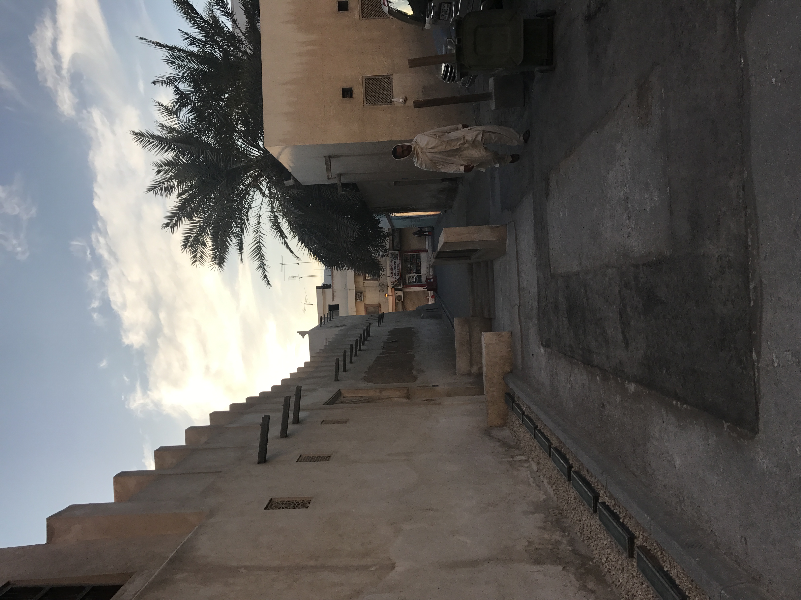
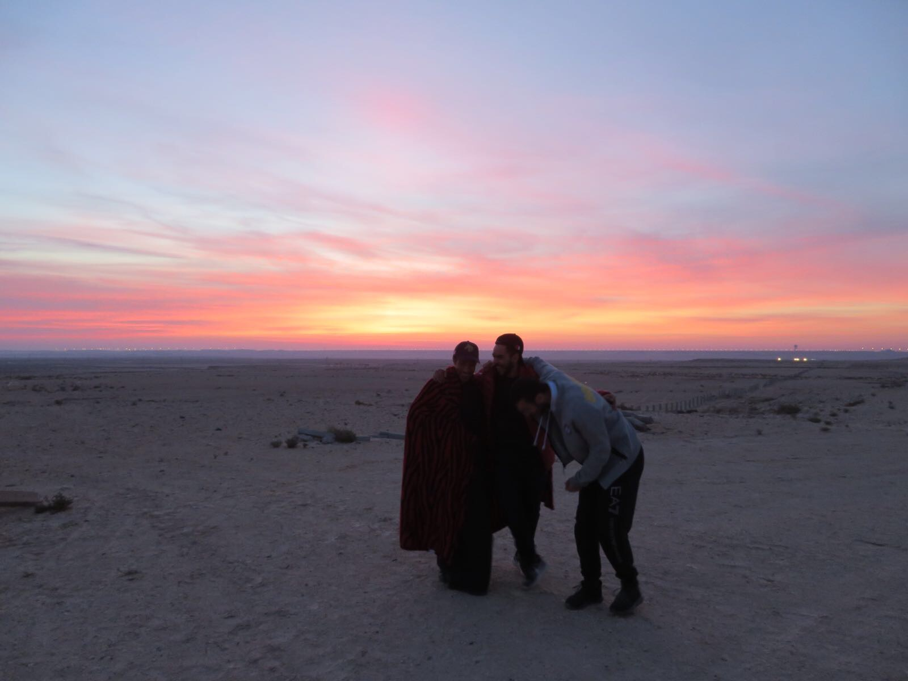

I believe in beauty and art. I believe that there are some things that transcend borders
and the boundaries we put up. And through art and language we can all speak to one another in line, shapes and curves. Coming from the Middle East, people are divided in how they embrace there culture with some clutching it close to there chest and others holding it at a distance. Personally I was undecided on how to approach myself until New York and all my work seems to be speaking of
home on some personal level. Hopefully through my pieces you can all get a sense of where I come from
and the people who have grown with me and maybe that will change the way you look at us.
at me.